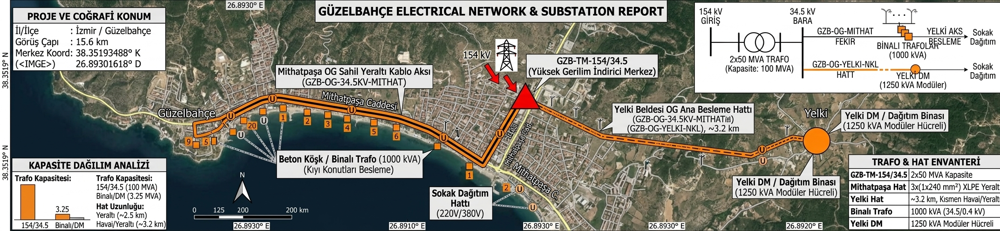

Elektrik Dağıtım Şebekesi ve Coğrafi Altyapı Analizi
Trafo merkezleri, orta gerilim hatları ve dağıtım trafoları
Ana İndirici Kapasite
100 MVA
2x50 MVA trafo gücü
Gerilim Dönüşümü
154 → 34,5 kV
Yüksek gerilimden orta gerilime
Yelki OG Besleme Hattı
~3,2 km
Kısmen yeraltı / kısmen havai
Dağıtım Trafoları
1.000 / 1.250 kVA
Binalı trafo / Yelki DM
Elektrik Dağıtım Şebekesi ve Trafo Konumları
Güzelbahçe bölgesi üzerindeki ana iletim hatlarını, trafo konumlarını ve sahil şeridi yeraltı kablo aksını coğrafi uydu haritası üzerinde göstermektedir.

Tek Hat Şeması
Giriş
154 kV
Yüksek gerilim
GZB-TM-154/34.5
2x50 MVA
Trafo · kapasite 100 MVA
Bara
34,5 kV
Orta gerilim
GZB-OG-34.5KV-MITHAT
Binalı trafolar
1000 kVA
Kıyı konutları besleme
Sokak dağıtımı
220 / 380 V
GZB-OG-YELKI-NKL · ~3,2 km
Yelki DM
1250 kVA
Modüler hücreli
Sokak dağıtımı
220 / 380 V
Trafo Kapasitesi (MVA)
Hat Uzunluğu (km)
Trafo Merkezleri ve Hat Varlıkları Envanteri
Ana indirici merkez, orta gerilim hatları ve dağıtım trafolarına ait teknik bilgiler
Trafo Merkezi Kartı (Ana İndirici)
| Kod | GZB-TM-154/34.5 |
| Tipi | Yüksek Gerilim İndirici Merkez |
| Giriş / Çıkış | 154 kV → 34.5 kV (Orta Gerilim) |
| Kapasite | 2x50 MVA Trafo Gücü (Toplam 100 MVA) |
| Hizmet Bölgesi | Güzelbahçe Genel & Yelki Aksı |
Mithatpaşa OG Sahil Yeraltı Kablo Aksı
| Hat Kodu | GZB-OG-34.5KV-MITHAT |
| Tip / Kesit | 3x(1x240 mm²) XLPE Yeraltı Kablosu |
| Gerilim | 34.5 kV Orta Gerilim |
| Güzergâh | Mithatpaşa Caddesi Altı Yeraltı Kanalı |
Yelki Beldesi OG Ana Besleme Hattı
| Hat Kodu | GZB-OG-YELKI-NKL |
| Tipi | Kısmen Yeraltı Kablo / Kısmen Havai Hat |
| Mesafe | ~3.2 km |
| İşlev | Ana İndiriciden Yelki DM'ye Enerji Aktarımı |
Dağıtım Trafoları
| Özellik | Beton Köşk / Binalı Trafo | DM / Dağıtım Binası |
| Güç | 1000 kVA (34.5 kV / 0.4 kV) | 1250 kVA Modüler Hücreli |
| Besleme Alanı | Mithatpaşa Cad. Kıyı Konutları | Yelki Yerleşimi & Çamlı Aksı |